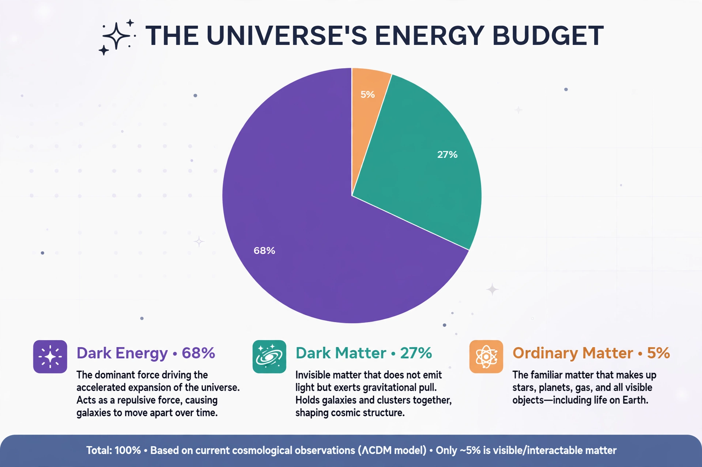

Lambda-CDM model

| Lambda-CDM model | |
|---|---|
| Type | Cosmological model |
| Components | Cosmological constant (Λ), cold dark matter, ordinary matter, radiation |
| Age of universe | 13.8 billion years |
| Geometry | Spatially flat |
The Lambda-CDM model (ΛCDM) is a parametrization of the Big Bang cosmological model in which the universe contains three major components: first, a cosmological constant denoted by Lambda (Λ), associated with dark energy; second, the postulated cold dark matter (CDM); and third, ordinary matter. It is frequently referred to as the standard model of Big Bang cosmology because it is the simplest model that provides a reasonably good account of the properties of the cosmos.
According to the model and measurements from the Planck satellite, the universe is about 13.8 billion years old and consists, by mass–energy, of roughly 68 percent dark energy, 27 percent dark matter and 5 percent ordinary (baryonic) matter. The expansion of the universe is accelerating, driven by dark energy, whose effect is described by the cosmological constant originally introduced — and later discarded — by Albert Einstein.
Evidence
Lambda-CDM successfully accounts for the existence and structure of the cosmic microwave background; the large-scale structure of galaxies and the distribution of voids; the abundances of hydrogen, helium and lithium produced by Big Bang nucleosynthesis; and the accelerating expansion measured through Type Ia supernovae, work recognised by the 2011 Nobel Prize in Physics.
Open problems
The model leaves fundamental questions unresolved: the physical nature of dark matter and dark energy is unknown; the measured value of the cosmological constant is extraordinarily small compared with theoretical predictions (the cosmological constant problem); and the locally measured Hubble constant disagrees with the value inferred from the early universe — the "Hubble tension" — a discrepancy that may signal physics beyond the model.
See also: Friedmann equations · Dark matter · Shape of the universe